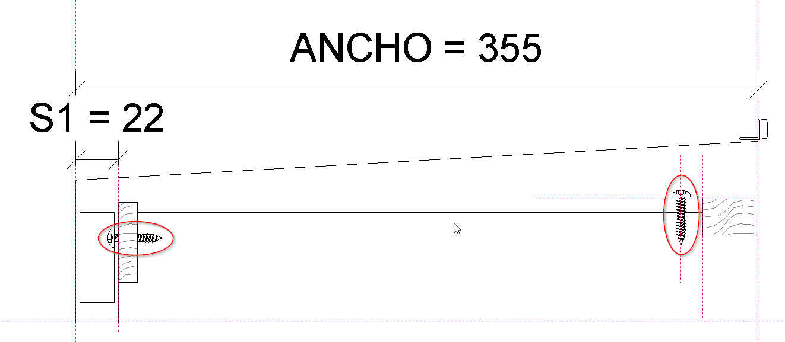
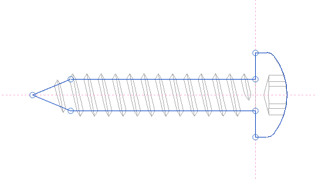
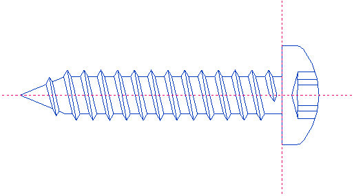

Modelling Small Details
I am back from the BIM Programming conference and workshops in Madrid and rather flooded with overdue stuff, so here is just a quick note on how to you can model small details in Revit, if you really need to, courtesy of Jose Ignacio Montes of Avatar BIM.
As you are perfectly well aware, Revit will not allow you to model things smaller than 1/8th of an inch directly in the project environment, as we have seen by trying to create smaller and smaller line and direct shape elements until an exception is thrown:
Jose presents a simple workaround using an imported DWG file:
Este es un veierteaguas de un remate de cubierta. Lleva dos tornillos que se repiten en más sitios, por lo que son 'detail items' insertados.
This shows a gutter cover. It has two little screws that are repeated in other places, so they are inserted as detail items.

El tornillo está formado por una máscara de líneas invisibles y un DWG importado con todo su detalle.
The screw is formed by a mask of invisible lines and an imported DWG with all its detail.


La familia de Clestra Metropoline usa el mismo sistema, pero dentro de un perfil de muro cortina. Este es un truco muy útil porque a poca gente se le ocurre meter un DWG dentro de un profile!
Our Clestra Metropoline family uses the same system, but within a curtain wall profile. This is a very useful trick that few people are aware of, to embed a DWG within a profile!
Lo mismo puede hacerse con ventanas, puertas o cualquier otro elemento que tenga detalles muy finos.
You can use the same idea with windows, doors or any other element that includes very fine detail.
Samples:
- MODULO_VIERTEAGUAS.rfa – gutter cover family
- CLESTRA_METROPOLINE.rvt – Clestra Metropoline curtain wall profile
Many thanks to Jose for sharing this nice approach!